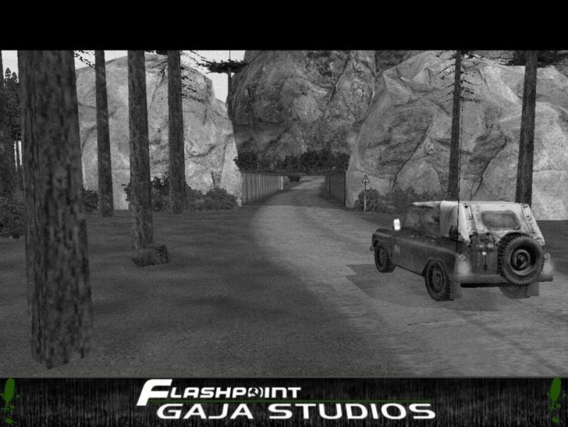
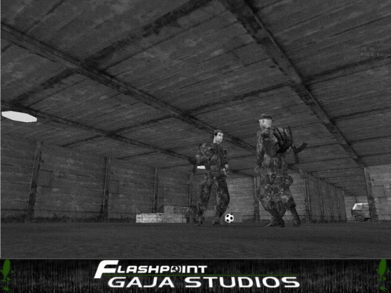
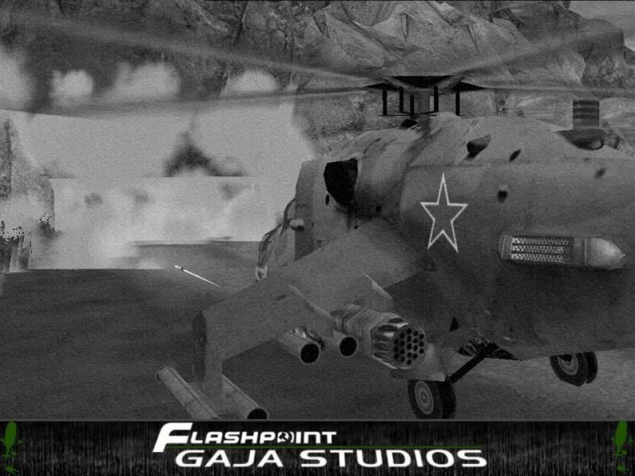

| Autor : GAJA |
Stáhnout ukázku Zpìt na Tipy & Triky |
| Tunel | |
|
Svùj první výtvor jsem vytvoøil krátce poté, co jsem si koupil OFP. Nechal jsem se inspirovat ukázkovýma misema, které jsou ke stažení na OFP.info v sekci Editor Extra.
Tunel vznikl na verzi 1.46 a mìl by pod ní bez problému bìžet. Po instalaci OFP:R s ním byly malé problémy, a tak ho bylo tøeba upravit.
Nyní funguje v poøádku a je k vám k dispozici. Tunel samotný by byl sám o sobì nezajímavý, a tak je dovnitø zakomponován tajný partyzánský úkryt.
Zapotøeba je addon EditorUpdate102 od Kegetyse.    |
|